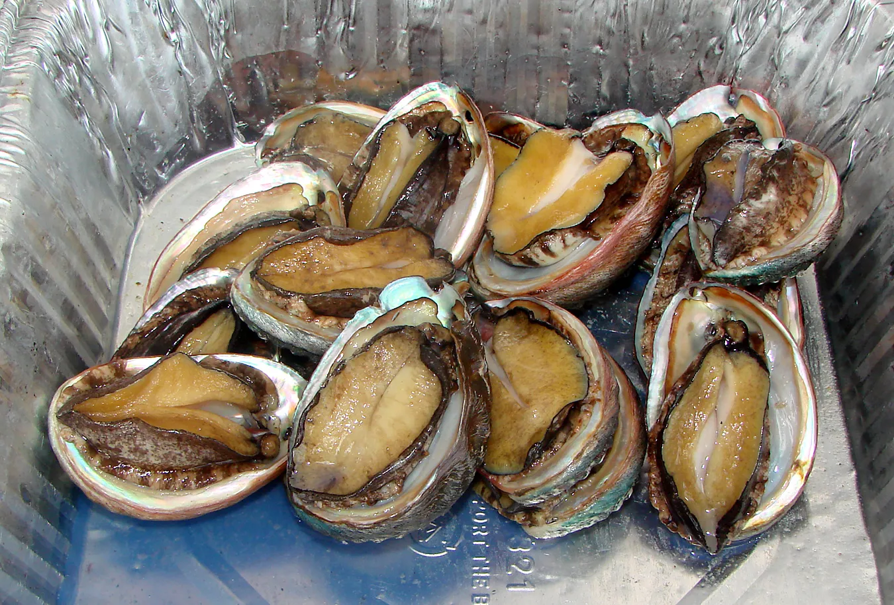

Personal projects and academic work spanning RAG systems, automated trading, browser automation, and machine learning.
Resume RAG Chatbot Live Demo
Python, React, FastAPI, FAISS, Anthropic Claude API

End-to-end RAG chatbot that answers questions about my background. Hybrid retrieval combining BM25 keyword search and FAISS dense embeddings with configurable alpha weighting (inspired by my Pinecone internship). Query rewriting layer using Claude for vague-to-specific expansion. Empirical alpha sweep across 15 Q&A pairs using LLM-as-judge found pure semantic retrieval achieved 5.0/5.0 relevance. React frontend with SSE streaming, source attribution, and dark/light mode. Docker containerized, deployed on Railway with rate limiting.
Automated Trading System
Python, WebSocket, PM2, Discord API

Automated market-making system for CFTC-regulated prediction markets (Polymarket US & Kalshi). OBI microprice estimation, continuous inventory skew, and dynamic spread adjustment. 4-layer risk management from fat-finger checks to system-level circuit breakers. Platform-agnostic adapter pattern so the same engine works across exchanges. Calibration study on 10,000+ resolved markets validated edge before committing capital. Paper trading: +151.9c P&L across 71+ fills in 11 sessions. Runs 24/7 on Mac Mini with PM2 and Discord alerts.
Tock Reservation Bot
Python, Playwright, PM2, Discord API

Automated reservation sniper for high-demand restaurants on Tock. Playwright browser automation handling the full booking flow: login, calendar navigation, slot detection with 6-selector fallback, and checkout. Two modes: hourly polling for scanning and precision sniper mode (3-second polls during release windows). Concurrent booking across multiple dates, session cookie persistence, Discord notifications. Deployed 24/7 on Mac Mini via PM2.
Classification of Mushrooms: Edible or Poisonous (Python)
This project develops machine learning models for accurately classifying mushrooms as edible or poisonous using a dataset of 3000+ images. Address challenges in mushroom identification and provide valuable tools for mushroom enthusiasts and field scientists.
Impacts of Vaccination Policy on COVID-19 Cases (R)

In this project, we assess the impact of government vaccination policies on Covid-19 spread across countries. Analyze time series data, including infection rates, testing rates, and vaccination policies. Build accurate ARIMAX models to understand policy effectiveness and inform decision-making. Discuss limitations and future considerations for analysis.
Abalone Age Prediction Using Three Comparable Models (Python, R)
This project utilizes physical measurements instead of time-consuming methods, exploring multiple regression techniques to estimate abalone age. With a dataset of 4177 observations and 9 variables, including the response variable "Rings," we address challenges like high correlation and multicollinearity. Our goal is to provide an efficient and accurate approach to age estimation, transforming the abalone industry.
Wheat Classification: Exploring Varietal Characteristics and Relationships (Python)
This research project analyzes and classifies Kama, Rosa, and Canadian wheat based on kernel features. Utilizing visualization, correlation analysis, and classification techniques, we uncover distinct characteristics and establish feature relationships. Applying methods like LOOCV and random forest grid search, we provide valuable insights into wheat differentiation and classification.
Visualizing COVID-19 Impact: A Real-Time Data Dashboard (R Shiny)
This project utilizes the power of Shiny and Plotly in R to develop an interactive, real-time dashboard visualizing the COVID-19 impact worldwide. Using the covid19api, the dashboard provides information on daily cases, deaths, and recoveries per country, including an all-encompassing global overview, thus serving as a comprehensive tool for COVID-19 data analysis and insights.
Unveiling Information Cascades (R)

This research project explores how participants' reliance on public predictions can override their own private information in decision-making. Through an experiment involving sequential predictions and payoff incentives, the study investigates information cascades and their impact on rational decision making. The findings shed light on herding behavior and have implications for various domains such as investments, marketing, and voting.